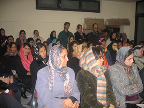
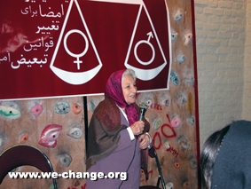
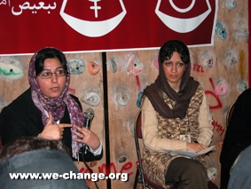
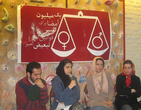
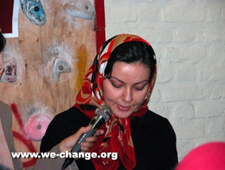
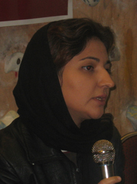

|
|

اولين نشست سراسري دست اندركاران كمپين يك ميليون امضا برگزار شد
جمعه24 آذر 1385
زير زمين خانه يكي از حاميان كمپين پنج شنبه 23 آذر، ميزبان اولين نشست سراسري دست اندركاران «كمپين يك ميليون امضا براي تغيير قوانين تبعيض آميز» بود.
در اين نشست كه با حضور اعضاي كمپين، داوطلبان جمع آوري امضا و فعالان اين حركت در شهرهاي كرمانشاه، گرگان، زنجان، مشهد، كرج، تبريز و همدان برگزار شد، نقاط ضعف و قوت كمپين طي سه ماهي كه از آغاز به كار آن مي گذرد مورد بررسي قرار گرفت.
زير زمين خانه يكي از حاميان كمپين پنج شنبه 23 آذر، ميزبان اولين نشست سراسري دست اندركاران «كمپين يك ميليون امضا براي تغيير قوانين تبعيض آميز» بود.
در اين نشست كه با حضور اعضاي كمپين، داوطلبان جمع آوري امضا و فعالان اين حركت در شهرهاي كرمانشاه، گرگان، زنجان، مشهد، كرج، تبريز، همدان و کرج برگزار شد، نقاط ضعف و قوت كمپين طي سه ماهي كه از آغاز به كار آن مي گذرد مورد بررسي قرار گرفت.

در ابتدا رضوان مقدم ، يكي از اعضاي كمپين، با صحبت خود در مورد اين كه خواست تغيير قوانين در ايران 100 سال قدمت دارد برنامه را آغاز كرد. وي افزود در ايران جنبش زنان همواره در پي تغيير قوانين تبعيض آميز بوده است و اين خواست سال هاست كه توسط جنبش زنان پيگيري شده است تا اينكه به طرح كمپين يك ميليون امضاء رسيده است. او سپس از مه لقا ملاح دعوت كرد تا سخنان خود را بيان كند.
مه لقاح ملاح، مدير انجمن زنان مبارزه با آلودگي محيط زيست كه به مادر سازمان هاي غيردولتي ايران معروف است، اولين سخنران اين نشست بود.
او با بيان اينكه 60 سال است در زمينه زنان كار مي كند، اتفاقي را كه منجر به حساسيتش به حقوق زنان شده اينگونه تعريف كرد:«11 ساله بودم كه يكي از زن هاي فاميل در يك مهماني گفت ما زنها ضعيفه و توسري خور هستيم. بعد از آن من مدام از خودم مي پرسيدم كه آيا من ضعيفه ام ؟ و هميشه سعي كردم خلاف اين را ثابت كنم.»

نوه بي بي خانم استرآبادي، به فعاليت هايي كه از زمان مشروطه در زمينه احقاق حقوق زنان آغاز شده است اشاره كرد و گفت: « مادربزرگ من، آن موقع در كتاب معايب الرجال نوشته بود اينهايي كه بر خلاف حقوق زن حرف مي زنند، رجال نيستند، دجالند.»
چرا قانون؟
«چرا قانون؟» موضوع پانل اول اين نشست بود كه پريسا كاكائي اين پانل را اداره مي كرد.
در اين پانل «خديجه مقدم»، درباره اهميت تغييرات قانوني سخن گفت. مقدم با اشاره به ديدگاهي كه اعتقاد دارد با وجود شكاف طبقاتي در جامعه، تلاش براي تغيير قوانين در حوزه زنان بي فايده است، گفت: «اتفاقا تغييرات قانوني در درجه اول در زندگي زنان طبقات پايين جامعه تاثير مي گذارد، چرا كه زنان طبقه متوسط با توجه به امكاناتي كه دارد مي تواند قانون را دور بزند و در زندگي شخصي اش تا حدي مشكلات را حل كند.»

او اضافه كرد:« با اين وجود همه زنان فارغ از طبقه اجتماعي شان، در زندگي اجتماعي شان با مشكلات ناشي از نابرابري هاي قانوني درگير هستند.»
به گفته مقدم تغيير قوانين تبعيض آميز قدم اول اين حركت است و پس از آن بايد براي آماده سازي فرهنگي جامعه و اجراي قوانين جديد و برابر تلاش كنيم.
مقايسه تغيير قانون حضانت در ايران و قانون سقط جنين در فرانسه موضوع سخنان «ناهيد كشاورز»، بود.
به گفته او، در اوایل دهه 70 میلادی زنان فزانسوي تلاش های بسیاری را برای تغییر قانون منع سقط جنين كه به نام قانون 1920 معروف بود ،کردند.. ماجرا اينگونه بود كه در آوريل 1971 تعدادي از زنان تصميم گرفتند حركتي را براي محكوم كردن جلوگيري از سقط جنين راه بياندازند و از همين رو 343 نفر از زناني كه بيشتر آنها چهره هاي شناخته شده ادبيات، سينما و تئاتر بودند بياينه اي را در مخالفت با اين قانون امضا كردند.
آزادي وسائل پيشگيري از بارداري و آموزش جنسي، حذف قانون 1920 و دفاع از متهمين سقط جنين از جمله خواسته هاي اين حركت بود.
كشاورز با اشاره به اينكه فعالان اين حركت با شركت در دادگاهي كه زنان متهم به سقط جنين را محاكمه مي كرد، در كنار آنها ايستادند و از آنها دفاع كردند، گفت: « پس از برگزاري اين دادگاه و پوشش رسانه اي آن ميليون ها فرانسوي در دورترين شهرها و روستاهاي فرانسه از اين حركت آگاهي يافتند و فهميدند كه بزرگترين اسايتد فرانسه آشكار ضد اين قانون هستند و در كنار سقط جنين كرده ها قرار گرفته اند. چاپ صدها مقاله در روزنامه هاي و پخش چند برنامه تلويزيوني درباره سقط جنين باعث شد كه زنان تمام طبقات اجتماعي اتحاد خودشان را اعلام كنند و آماده ورود به مبارزه شوند.»

وي با توضيح تلاش هايي كه منجر به تغيير قانون حضانت كودكان در ايران شد، گفت: « مطالعه اين تلاش ها نشان مي دهد كه ما زنان اعم از شرقي و غربي چه تجربيات مشتركي داريم و چقدر مي توانيم از اين تجربيات استفاده كنيم.»
«بازهم بحث تغير قوانين پيش آمده و بازهم عده اي كه نشانه رفته اند كه اي ليبرال هاي سطحي نگر ما شكست شما را پيش بيني مي كنيم.» اين سخنان آغاز مبحثي بود كه از سوي «سونيا غفاري»، با عنوان «گرايش هاي مختلف فمنيستي و تعهدشان به تغييرات قانوني» مطرح شد.

غفاري با بررسي تلاش هاي گرايش هاي مختلف فمنيستي در رابطه با تغيير قوانين، گفت: «مبارزات عملي زنان مملو از مواردي است كه نشان مي دهد آنها فارغ از اينكه كدام كار ليبرالي است و كدام كار غير ليبرالي، مصمصم در راهي كه درست مي دانستند گام برداشته اند و به انصاف اقداماتشان هيچ گاه منجر به عقب رفتن جامعه و بدتر شدن وضع زنان نشده است.»
او با طرح اين سوال كه : آيا حركتي كه سعي مي ند با زنان طبقات مختلف جامعه ارتباط برقرار كند و از رنج مشتركشان بگويد و بشنود سطحي است؟ تاكيد كرد:« در هر صورت به ياد داشته باشيم بريا همني خواسته هايي كه از جانب منتقدين به صفت هايي چون سطحي و پيش پا افتاده مزين شده است نيز بايد ساعت ها گفتگو كرد، وزها وقت گذاشت، و سال ها صبر كرد.»
فعالان شهرستان ها از كمپين يك ميليون امضا مي گويند
پانل دوم اين نشست اختصاص به بررسي مشكلات كمپين در شهرستان ها داشت كه توسط سارا لقماني گردانده شد. در اين پانل نمايندگاني از گرگان، زنجان، همدان و تبريز سخنراني كردند و فعالان كمپين در كرج، مشهد وكرمانشاه نيز در زمان پرسش و پاسخ وضعيت كمپين در اين شهرها را با حاضران در ميان گذاشتند.

«ايمان مظفري» كه به نمايندگي از اعضاي گرگاني كمپين در اين نشست شركت كرده بود، كمپين را پيوند دهنده روزنامه نگاران، فعالان سازمان هاي غيردولتي و فعالان سياسي_ اجتماعي گرگان عنوان كرد.
او با اشاره به انكه هر يك از اين سه طيف از پتانسيل هاي مخصوص به خودش براي پيشبرد كمپين كمك مي گيرد، راه اندازي صفحه زنان در مطبوعات محلي گرگان، مجمع مشورتي زنان گلستان و وجود نيروهايي كه آموزش تسهيلگري و آموزشگري را ديده اند از جمله فضاهاي مثبت اين استان براي فعاليت هاي كمپين يك ميليون امضا برشمرد.
گرگاني ها با وجود استقبال همشريانشان از كمپين ، نگراني هاي نيز دارند. نگراني هايي همچون: « نداشتن امكانات مالي، تمكز فعاليت ها در يك گروه كوچك و توزيع نشدن مسئوليت ها بين باقي كنشگران، كمرنگ شدن هدف آگاهسازي كمپين به جهت گسترش كمي كار و متمركز شدن كمپين در تهران و ايجاد فاصله ميان شهرستان ها.»
زنجان نيز يكي از شهرهايي است كه با سازماندهي قوي، اهداف كمپين يك ميليون امضا را دنبال مي كند. به گفته «صفيه قره داغي»، عضو گروه دختران ترانه پس از برگزاري سميناري با موضوع حقوق زنان و معرفي كمپين يك ميليون امضا ، شش كميته براي برنامه ريزي و پيشبرد كمپين در زنجان تشكيل شده است و با اجاره يك دفتر، دادن حق عضويت و برگزاري جلسات منظم براي جمع آوري امضا و آگاهسازي مردم در زمينه نابرابري هاي حقوقي تلاش مي شود.
قره داغي مشكلات مالي را يكي از موانع مهم در زنجان اعلام كرد و ادامه داد: « با وجود اينكه ما كميته شهرستان ها را براي ارتباط گيير با شهرستان هاي استان زنجان تشكيل داده ايم و از شهرهايي همچون ابهر نيز تقاضاي برگزاري كارگاه را داشته ايم اما به خاطر تامين نشدن هزينه ها موفق به انجام اين كار نشده ايم.»
وي همچنين بر لزوم ارتباط مستمر فعالان كمپين در شهرهاي مختلف تاكيد كرد و پيشنهاد داد راهكاري براي استفاده از تجربيات يكديگر اتخاذ شود.
«الناز سرداني»، از فعالين تبريزي كمپين ديگر سخنران اين پانل بود. سرداني با بيان اينكه تبريز اولين شهري بود كه با برگزاير كارگاه آموزشي به كمپين پيوست، گفت:« در اين مدت علاوه بر جمع آوري امضا از مردم با عده اي از نويسندگان و شاعران سرشناس تبريز نيز درباره كمپين گفت و گو كرده ايم تا هم بيانيه را امضا كنند و هم در كنار كمپين باشند.»
به گفته او راه اندازي وبلاگ ويژه كمپين، چاپ دفترچه هاي كمپين براي تبريزي ها و برگزاري جلسات ماهانه از ديگر اقدامات تبريزي ها براي گسترش كمپين در شهرشان است.

سرداري موانع پيش روي فعالان تبريزي را اينگونه بيان كرد:« تعداد افرادي كه به صورت جدي و مستمر براي كمپين وقت بگذارند كم است و بيشتر كارها توسط يك عده محدود انجام مي شود، سازمان هاي غيردولتي تبريز يا محافظه كارند و در زمينه حقوق زنان فعاليت نمي كنند و يا اينكه انسجام لازم براي وارد شدن به اين حركت را ندارند، دسترسي به اينترنت و استفاد از آن رواج نيافته و به همين دليل برقراري ارتباط و آگاهسازي زنان كمي مشكل است.»
«مهرداد حمزه» نيز كه با وجود هواي برفي و بسته شدن راه ها، در آخرين دقائق برنامه خودش را رسانده بود، وضعيت كمپين در شهر همدان را شرح داد.
حمزه اضافه شدن تعداد فعالان كمپين در همدان، همكاري قشرهاي مختلف اجتماعي و به ويژه معلمان همداني و وجود يك حقوقدان در جمع كمپيني ها را به عنوان نقاط قوت گروه همدان بيان كرد و گفت: « كمپين در مدارس دخترانه همدان خيلي خوب پيش رفته است و زنان خانه دار هم با روش هاي ابتكاري مثل برگزار كردن جلسات خانگي براي معرفي كمپين در كنار اين حركت هستند.»
با اين وجود اما، همداني ها نيز با مشكلات مختلفي دست و پنجه نرم مي كنند: « اطلاعاتي كه درباره كمپين و درباره مسائل حقوقي در اختيارافراد قرار مي گيرد كم است، تنها منبع اطلاع رساني كمپين سايت اينترنتي است و در همدان به خاطر فراگير نشدن اينترنت و پايين بودن سرعت، كمبود منابع اطلاع رساني به وضوح احساس مي شود، كار به سرعت در همدان و شهرستن هاي اطراف در حال گسترش است و اين نگراني كه زمام كار از دستمان خارج شود وجود دارد.»
استراتژي ها و روش هاي حركت
در ادامه نشست، اعضاي كمپين به بررسي استراتژي ها و روش هاي به كار برده شده در كمپين يك ميليون امضا پرداختند كه اين پانل را زارا امجديان مي گرداند.
استراتژي هاي زنان در كشورهاي منطقه، موضوع سخنان «هما مداح»، بود.
او با طبقه بندي تلاش هاي زنان براي تغيير قوانين، گفت: « در موج اول، زنان ادغام و همگاري تنگاتنگ با ديگر جنبش ها را پيش رو گرفته بودند كه نمونه آن را مي توان در مصر و الجزاير مشاهده كرد و در موج دوم به تشكيل اتئلاف هاي دروني روي آورند.»
مداح با بيان اينكه جنبش زنان براي تغيير قوانين و كمپين يك ميليون امضا چه از لحاظ استراتژي و چه از لحاظ شكل عمل، به خوبي از تجربيات زنان منطقه استفاده كرده است، افزود:« اين كمپين نتيجه يك ائتلاف در سراسر ايران است كه ظرفيت توسعه و اضافه شدن گروه هاي جددي و افكار جديد را دارد.»
او ادامه داد:« كمپين يك ميليون امضا از راهكارهاي متفاوتي استفاده مي كند. مثلا در 22 خرداد به خيابان مي آيد. در طول سال كارگاه هيا آموزشي برگزار مي كند، بحث حقوق زنان را به فضاهاي عمومي همچون مترو مي برد و بحث هاي دانشگاهيان درباره لزوم تغيير قوانين را در فضاي اينترنت مطرح مي كند.»

«مريم حسين خواه»، نيز با اشاره به اينكه يكي از انتقاد هايي كه هميشه در رابطه با جنبش زنان مطرح شده «نخبه گرايي» اين جنبش است، «فراروي كمپين يك ميليون امضا از نخبگان» را مورد بررسي قرار داد.
حسين خواه ترويجي بودن حركت كمپين، محدود نكردن كنشگران كمپين به اعضاي سازمان هاي غيردولتي و فعالان حوزه زنان، اقدام به جذب نيرو از ميان مخاطبان كمپين و پرهيز از قيم مآبي و تعيين اولويت و روش براي كنشگران را از جمله ويژگي هاي كمپين يك ميليون امضا عنوان كرد.
وي ادامه داد:«در حقيقت اين مطالبات كمپين يك ميليون امضا نبود كه توانست آن را به سطح جامعه برده و فراگير كند،چون اين خواسته ها از زمان مشروطه مطرح بوده اند. اين بار اما روش ها كمي متفاوت بود و چگونگي بيان خواسته ها، سازمان دهي نيروها، شكل مشاركتي و افقي كار و توجه به آموزش و جذب نيروهاي جديد همه و همه معطوف به گسترش كمپن در بين مردم است.»
«جلوه جواهري»،نيز طي سخناني به روش هاي پيشبرد اهداف كمپين پرداخت.
او با تاكيد بر اينكه کمپین از ابتدای شکل گیری خود به صورت منعطف و با ساخت شبکه های نامتمرکز پیش رفته است، توضيح داد:«اگر کمپین شیوه ای نامتمرکز را در کار خود پیش بگیرد، افراد و گروه ها با انتخاب های بیشتری روبرو هستند. آنها می توانند خود گروهی را تشکیل دهند که در آن، شیوه عمل خود را ابداع کنند و یا در صورت تمایل به کمیته های موجود بپیوندند.»

به اعتقاد جواهري این گروه ها می توانند گروه هایی باشند که از قبل وجود داشته اند و اکنون به صورت یک گروه ولی به صورت جدا از هسته اولیه ولی هماهنگ با دیگر گروه ها، فعالیت کنند. در این صورت پس از مدتی نقش هسته مرکزی به تدریج کمرنگ شده ، قدرت و مسئولیت هایش در بین گروه ها و هسته های بوجود آمده پخش می شود و کمیپن مجموعه ای از هسته های پراکنده و متکثر در عمل و اندیشه خواهد بود.
اين عضو كمپين يك ميليون امضا اضافه كرد:« نیروهای جدیدی که به کمپین می پیوندند باید در اندیشه باشند که چگونه می توانند با کمپین تعامل داشته باشند و بهترین شیوه ای را که می توانن عاملی موثر باشند بیابند. برای این کار باید جلسات متعددی برقرار شود و افراد با یکدیگر تعامل داشته باشند تا هر کس بنا به تفکر و شیوه عمل خود، همراهان خود را بیابد.»
او با تاكيد بر اينكه کمپین یک طرح باز است و تنها چیزی که در آن بین همه کنشگرانش، مشترک است بیانیه است، گفت:« ما می توانیم از این امکان در جهت رشد هر چه بیشتر خود و دیگران تلاش کنیم و تلاشمان را به تلاشی بلند مدت پیوند زنیم.»
در پايان هر پانل شركت كنندگان به بررسي موارد مطرح شده از سوي سخنرانان پرداخته و راهكارهاي خود را براي رفع موانع ارائه مي دادند. تشكيل كميته هنري و ايجاد وبلاگ هاي مشترك از جمله پيشنهاداتي بود كه در دستور كار كمپين قرار گرفت.
در اين نشست بروشوري از عملكرد كمپين و گزارش مالي كمپين به كليه اعضاي كمپين ارائه شد/

اين نشست در حالي برگزار شد كه بسياري از مدعوين به دليل كمبود جا ايستاده برنامه را دنبال مي كردند.اعضاي كمپين يك ميليون امضا در نظر داشتند با برگزاري نشست هاي ماهانه اين حركت گسترده را به صورت مداوم مورد بررسي و ارزيابي قرار داده و افراد بيشتري را با آن آشنا كنند، اما در نزديك به چهار ماهي كه از آغاز به كار كمپين مي گذرد هيچ كدام از سالن هاي عمومي شهر اجازه برگزاري نشستي با موضوع حقوق زنان را به فعالان اين حركت نداده اند. برنامه افتتاحيه اين كمپين نيز كه قراربود در سالن اجتماعات يكي از سازمان هاي غيردولتي برگزار شود از سوي نيروي انتظامي لغو شد.
از همين رو به دليل ضرورت داشتن برگزاري نشست ها عمومي براي پيشبرد اهداف كمپين، اين نشست با حداقل امكانات و استفاده از امكانات شخصي اعضا وحاميان كمپين برگزار شد.